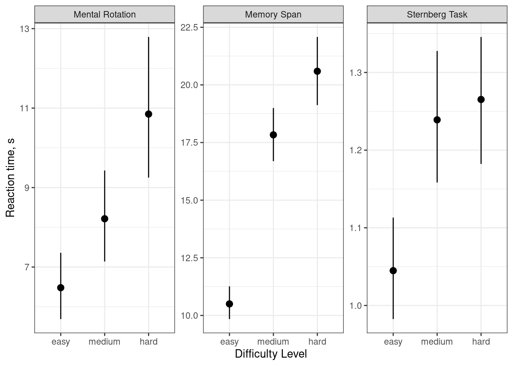
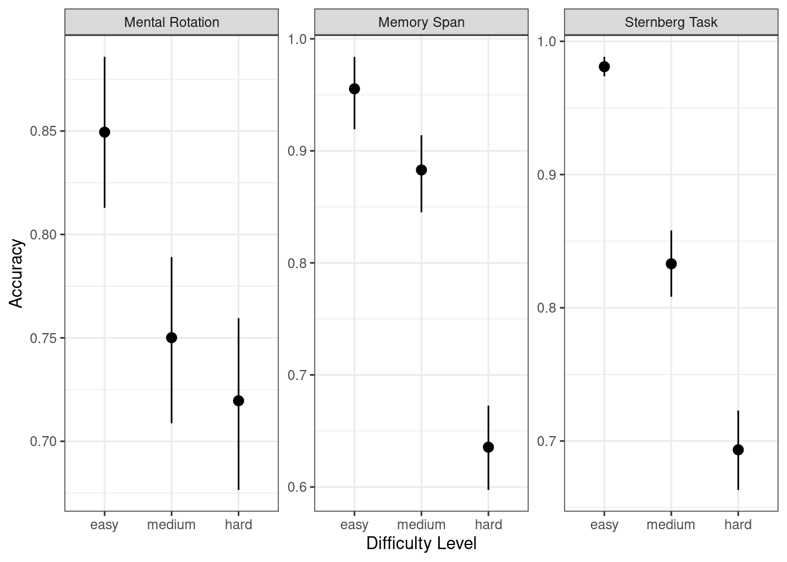
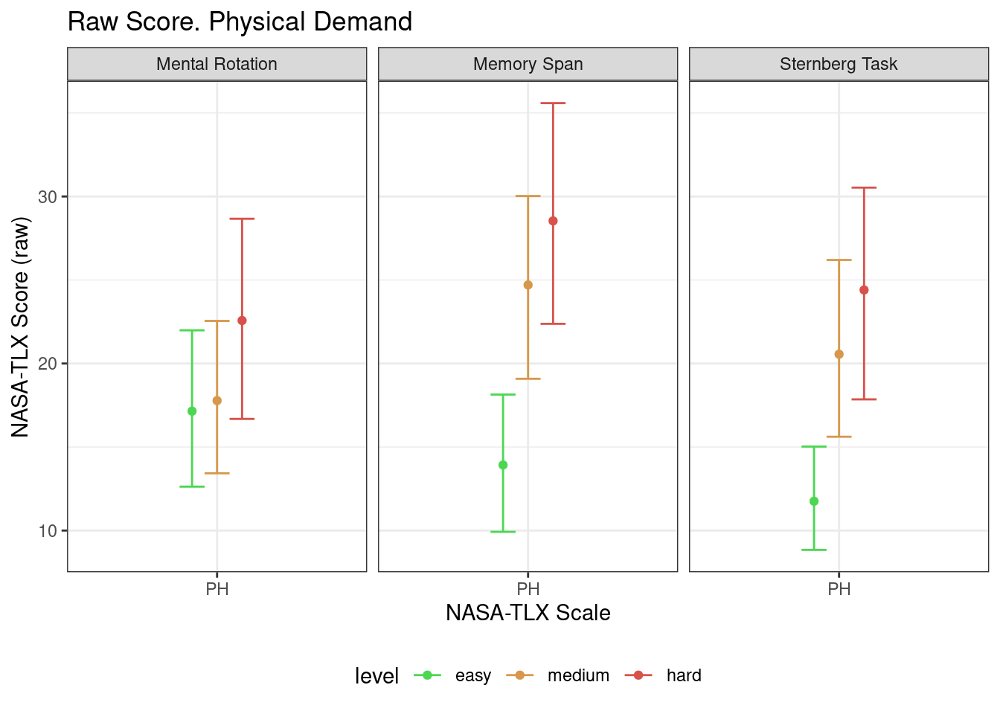
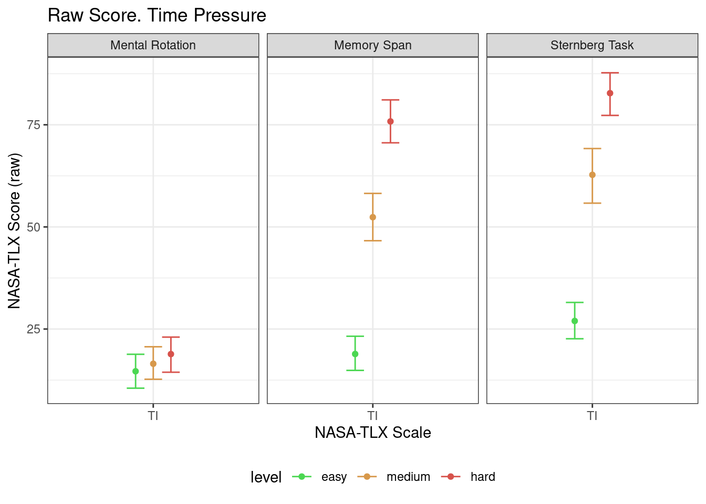
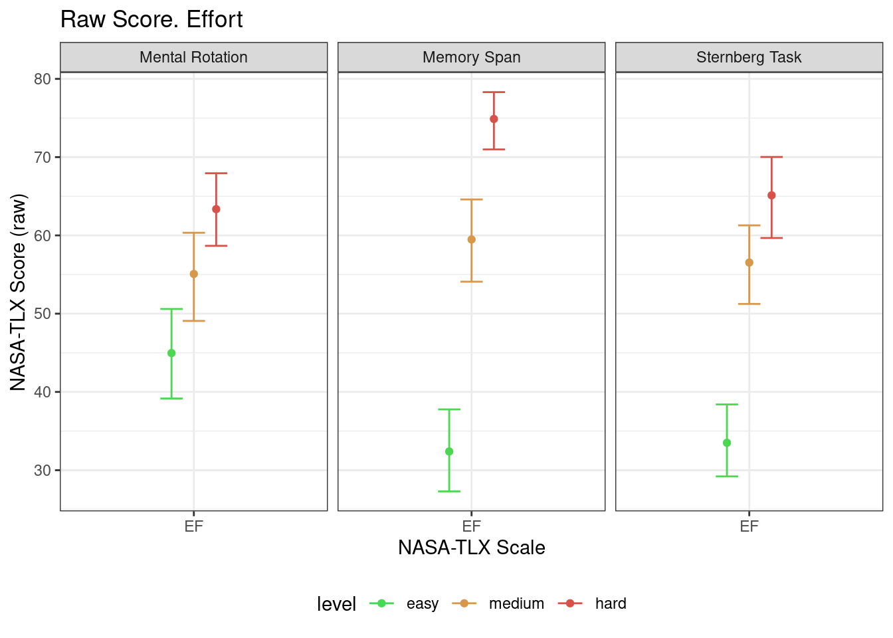
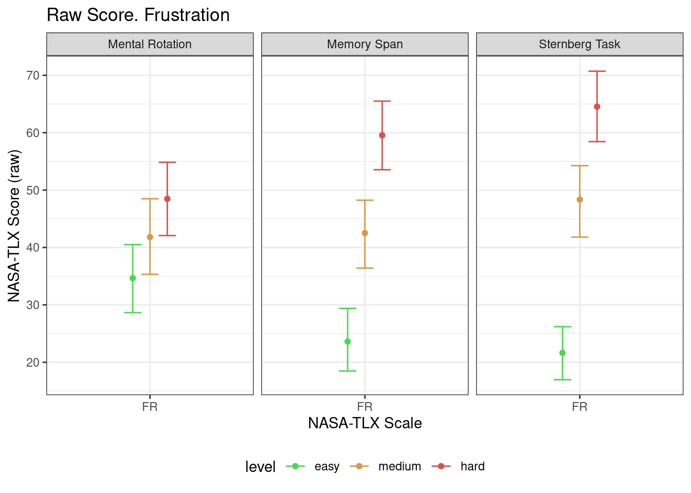

knitr::opts_chunk$set(error = TRUE)First banch. Analysis workflow
Packages
library(tidyverse)
theme_set(theme_bw()) # set black and white theme
library(lme4)
library(lmerTest)
library(lsmeans)
library(MuMIn)
library(pwr)rm(list = ls())Reading data
MR_data <- read_csv("../preproc-data/MR_pav_data.csv")Rows: 3936 Columns: 8
── Column specification ────────────────────────────────────────────────────────
Delimiter: ","
chr (5): correctAns, key, task, level, id
dbl (3): is_correct, rt, trial
ℹ Use `spec()` to retrieve the full column specification for this data.
ℹ Specify the column types or set `show_col_types = FALSE` to quiet this message.ST_data <- read_csv("../preproc-data/ST_pav_data.csv")Rows: 3936 Columns: 8
── Column specification ────────────────────────────────────────────────────────
Delimiter: ","
chr (4): key, task, level, id
dbl (4): target_present, is_correct, rt, trial
ℹ Use `spec()` to retrieve the full column specification for this data.
ℹ Specify the column types or set `show_col_types = FALSE` to quiet this message.MS_data <- read_csv("../preproc-data/MS_pav_data.csv")Rows: 3936 Columns: 7
── Column specification ────────────────────────────────────────────────────────
Delimiter: ","
chr (3): task, level, id
dbl (4): trials, n, rt, acc
ℹ Use `spec()` to retrieve the full column specification for this data.
ℹ Specify the column types or set `show_col_types = FALSE` to quiet this message.NASATLX_data <- read_csv("../preproc-data/NASATLX_pav_data.csv")Rows: 4428 Columns: 5
── Column specification ────────────────────────────────────────────────────────
Delimiter: ","
chr (4): task, level, id, scale
dbl (1): score
ℹ Use `spec()` to retrieve the full column specification for this data.
ℹ Specify the column types or set `show_col_types = FALSE` to quiet this message.SEQUENCE_data <- read_csv("../preproc-data/SEQ_pav_data.csv")Rows: 738 Columns: 4
── Column specification ────────────────────────────────────────────────────────
Delimiter: ","
chr (3): level, task, id
dbl (1): order
ℹ Use `spec()` to retrieve the full column specification for this data.
ℹ Specify the column types or set `show_col_types = FALSE` to quiet this message.Behavioral data
Remove outliers & Aggregate
is_outlier <- function(x) ifelse(x > quantile(x, .25, na.rm = TRUE) - 1.5 * IQR(x, na.rm = TRUE) &
x < quantile(x, .75, na.rm = TRUE) + 1.5 * IQR(x, na.rm = TRUE),
FALSE, TRUE)Mental Rotation
MR_data |>
group_by(id, level, task) |>
mutate(is_outlier = is_outlier(rt)) |>
filter(!is_outlier) |>
summarise(rt = mean(rt),
acc = mean(is_correct)) -> MR_data_agg`summarise()` has grouped output by 'id', 'level'. You can override using the
`.groups` argument.MR_data_agg |> write_csv("../preproc-data/MR_pav_data_agg.csv")Memory Span
MS_data |>
group_by(id, level, task) |>
mutate(is_outlier = is_outlier(rt)) |>
mutate(is_outlier = ifelse(is.na(is_outlier), FALSE, is_outlier)) |>
filter(!is_outlier) |>
summarise(rt = mean(rt),
acc = mean(acc)) -> MS_data_agg`summarise()` has grouped output by 'id', 'level'. You can override using the
`.groups` argument.MS_data_agg |> write_csv("../preproc-data/MS_pav_data_agg.csv")Sternberg Task
ST_data |>
group_by(id, level, task) |>
mutate(is_outlier = is_outlier(rt)) |>
filter(!is_outlier) |>
summarise(rt = mean(rt),
acc = mean(is_correct)) -> ST_data_agg`summarise()` has grouped output by 'id', 'level'. You can override using the
`.groups` argument.ST_data_agg |> write_csv("../preproc-data/ST_pav_data_agg.csv")Plot all paradigms
MR_data_agg |>
bind_rows(MS_data_agg, ST_data_agg) |>
mutate(level = factor(level,
ordered = TRUE,
levels = c("easy", "medium", "hard"))) |>
ggplot(aes(level, rt)) +
facet_wrap(~ task, scales = "free_y",
labeller = labeller(task = c(MR = "Mental Rotation",
MS = "Memory Span",
ST = "Sternberg Task"))) +
stat_summary(fun.data = mean_cl_boot, geom = "pointrange") +
labs(x = "Difficulty Level", y = "Reaction time, s")MR_data_agg |>
bind_rows(MS_data_agg, ST_data_agg) |>
mutate(level = factor(level,
ordered = TRUE,
levels = c("easy", "medium", "hard"))) |>
ggplot(aes(level, acc)) +
facet_wrap(~ task, scales = "free_y",
labeller = labeller(task = c(MR = "Mental Rotation",
MS = "Memory Span",
ST = "Sternberg Task"))) +
stat_summary(fun.data = mean_cl_boot, geom = "pointrange") +
labs(x = "Difficulty Level", y = "Accuracy")
Desriptives
Mental Rotation
MR_data_agg |>
group_by(level, task) |>
summarise(n = unique(id) |> length(),
mean = mean(rt),
median = median(rt),
sd = sd(rt),
min = min(rt),
max = max(rt),
CI_lower = mean - 1.96 * sd / sqrt(n),
CI_upper = mean + 1.96 * sd / sqrt(n)) |>
# mutate_all(.funs = function(x) if (is.double(x)) return(round(x, 2)) else return(x)) |>
knitr::kable(caption = "Mental Rotation. Reaction Time", digits = 2)`summarise()` has grouped output by 'level'. You can override using the
`.groups` argument.| level | task | n | mean | median | sd | min | max | CI_lower | CI_upper |
|---|---|---|---|---|---|---|---|---|---|
| easy | MR | 82 | 6.48 | 5.41 | 4.03 | 1.17 | 25.47 | 5.61 | 7.35 |
| hard | MR | 82 | 10.85 | 8.43 | 8.02 | 0.50 | 44.55 | 9.11 | 12.59 |
| medium | MR | 82 | 8.22 | 7.02 | 5.51 | 0.31 | 33.12 | 7.02 | 9.41 |
MR_data_agg |>
group_by(level, task) |>
summarise(n = unique(id) |> length(),
mean = mean(acc),
sd = sd(acc),
min = min(acc),
max = max(acc),
CI_lower = mean - 1.96 * sd / sqrt(n),
CI_upper = mean + 1.96 * sd / sqrt(n)) |>
# mutate_all(.funs = function(x) if (is.double(x)) return(round(x, 3)) else return(x)) |>
knitr::kable(caption = "Mental Rotation. Accuracy", digits = 3)`summarise()` has grouped output by 'level'. You can override using the
`.groups` argument.| level | task | n | mean | sd | min | max | CI_lower | CI_upper |
|---|---|---|---|---|---|---|---|---|
| easy | MR | 82 | 0.849 | 0.169 | 0.286 | 1 | 0.813 | 0.886 |
| hard | MR | 82 | 0.720 | 0.183 | 0.333 | 1 | 0.680 | 0.759 |
| medium | MR | 82 | 0.750 | 0.180 | 0.250 | 1 | 0.711 | 0.789 |
Memory Span
MS_data_agg |>
group_by(level, task) |>
summarise(n = unique(id) |> length(),
mean = mean(rt, na.rm = TRUE),
median = median(rt, na.rm = TRUE),
sd = sd(rt, na.rm = TRUE),
min = min(rt, na.rm = TRUE),
max = max(rt, na.rm = TRUE),
CI_lower = mean - 1.96 * sd / sqrt(n),
CI_upper = mean + 1.96 * sd / sqrt(n)) |>
# mutate_all(.funs = function(x) if (is.double(x)) return(round(x, 2)) else return(x)) |>
knitr::kable(caption = "Memory Span. Reaction Time", digits = 2)`summarise()` has grouped output by 'level'. You can override using the
`.groups` argument.| level | task | n | mean | median | sd | min | max | CI_lower | CI_upper |
|---|---|---|---|---|---|---|---|---|---|
| easy | MS | 82 | 10.50 | 10.03 | 2.78 | 5.47 | 23.47 | 9.90 | 11.10 |
| hard | MS | 82 | 20.59 | 19.92 | 5.91 | 11.24 | 39.57 | 19.31 | 21.87 |
| medium | MS | 82 | 17.83 | 16.83 | 4.68 | 9.47 | 32.31 | 16.82 | 18.85 |
MS_data_agg |>
group_by(level, task) |>
summarise(n = unique(id) |> length(),
mean = mean(acc),
sd = sd(acc),
min = min(acc),
max = max(acc),
CI_lower = mean - 1.96 * sd / sqrt(n),
CI_upper = mean + 1.96 * sd / sqrt(n)) |>
knitr::kable(caption = "Memory Span. Accuracy", digits = 3)`summarise()` has grouped output by 'level'. You can override using the
`.groups` argument.| level | task | n | mean | sd | min | max | CI_lower | CI_upper |
|---|---|---|---|---|---|---|---|---|
| easy | MS | 82 | 0.955 | 0.161 | 0 | 1.000 | 0.921 | 0.990 |
| hard | MS | 82 | 0.635 | 0.169 | 0 | 0.989 | 0.599 | 0.672 |
| medium | MS | 82 | 0.883 | 0.169 | 0 | 1.000 | 0.846 | 0.919 |
Sternberg Task
ST_data_agg |>
group_by(level, task) |>
summarise(n = unique(id) |> length(),
mean = mean(rt),
sd = sd(rt),
min = min(rt),
max = max(rt),
CI_lower = mean - 1.96 * sd / sqrt(n),
CI_upper = mean + 1.96 * sd / sqrt(n)) |>
knitr::kable(caption = "Sternberg Task. Reaction Time", digits = 2)`summarise()` has grouped output by 'level'. You can override using the
`.groups` argument.| level | task | n | mean | sd | min | max | CI_lower | CI_upper |
|---|---|---|---|---|---|---|---|---|
| easy | ST | 82 | 1.04 | 0.29 | 0.61 | 2.23 | 0.98 | 1.11 |
| hard | ST | 82 | 1.27 | 0.39 | 0.72 | 2.73 | 1.18 | 1.35 |
| medium | ST | 82 | 1.24 | 0.39 | 0.69 | 2.92 | 1.16 | 1.32 |
ST_data_agg |>
group_by(level, task) |>
summarise(n = unique(id) |> length(),
mean = mean(acc),
sd = sd(acc),
min = min(acc),
max = max(acc),
CI_lower = mean - 1.96 * sd / sqrt(n),
CI_upper = mean + 1.96 * sd / sqrt(n)) |>
knitr::kable(caption = "Sternberg Task. Accuracy", digits = 3)`summarise()` has grouped output by 'level'. You can override using the
`.groups` argument.| level | task | n | mean | sd | min | max | CI_lower | CI_upper |
|---|---|---|---|---|---|---|---|---|
| easy | ST | 82 | 0.981 | 0.034 | 0.857 | 1 | 0.974 | 0.988 |
| hard | ST | 82 | 0.693 | 0.140 | 0.286 | 1 | 0.663 | 0.724 |
| medium | ST | 82 | 0.833 | 0.112 | 0.600 | 1 | 0.809 | 0.857 |
ANOVA
MR_data_agg |>
bind_rows(MS_data_agg, ST_data_agg) -> all_pav_data_aggReaction Time
mix_rt <- lmer(rt ~ task * level + (1|id), all_pav_data_agg)
summary(mix_rt)Linear mixed model fit by REML. t-tests use Satterthwaite's method [
lmerModLmerTest]
Formula: rt ~ task * level + (1 | id)
Data: all_pav_data_agg
REML criterion at convergence: 3777.6
Scaled residuals:
Min 1Q Median 3Q Max
-2.4154 -0.5419 -0.0150 0.3095 7.4595
Random effects:
Groups Name Variance Std.Dev.
id (Intercept) 4.175 2.043
Residual 15.007 3.874
Number of obs: 666, groups: id, 82
Fixed effects:
Estimate Std. Error df t value Pr(>|t|)
(Intercept) 6.4802 0.4837 494.0187 13.398 < 2e-16 ***
taskMS 3.7916 0.6706 589.4632 5.654 2.44e-08 ***
taskST -5.4354 0.6050 579.0396 -8.984 < 2e-16 ***
levelhard 4.3698 0.6050 579.0396 7.223 1.61e-12 ***
levelmedium 1.7352 0.6050 579.0396 2.868 0.00428 **
taskMS:levelhard 5.7237 0.9399 579.0396 6.089 2.07e-09 ***
taskST:levelhard -4.1493 0.8556 579.0396 -4.850 1.59e-06 ***
taskMS:levelmedium 5.5989 0.9399 579.0396 5.957 4.47e-09 ***
taskST:levelmedium -1.5410 0.8556 579.0396 -1.801 0.07220 .
---
Signif. codes: 0 '***' 0.001 '**' 0.01 '*' 0.05 '.' 0.1 ' ' 1
Correlation of Fixed Effects:
(Intr) taskMS taskST lvlhrd lvlmdm tskMS:lvlh tskST:lvlh tskMS:lvlm
taskMS -0.564
taskST -0.625 0.451
levelhard -0.625 0.451 0.500
levelmedium -0.625 0.451 0.500 0.500
tskMS:lvlhr 0.403 -0.701 -0.322 -0.644 -0.322
tskST:lvlhr 0.442 -0.319 -0.707 -0.707 -0.354 0.455
tskMS:lvlmd 0.403 -0.701 -0.322 -0.322 -0.644 0.500 0.228
tskST:lvlmd 0.442 -0.319 -0.707 -0.354 -0.707 0.228 0.500 0.455 anova(mix_rt)Type III Analysis of Variance Table with Satterthwaite's method
Sum Sq Mean Sq NumDF DenDF F value Pr(>F)
task 21801.9 10900.9 2 597.41 726.399 < 2.2e-16 ***
level 2648.6 1324.3 2 579.04 88.248 < 2.2e-16 ***
task:level 1837.9 459.5 4 579.04 30.618 < 2.2e-16 ***
---
Signif. codes: 0 '***' 0.001 '**' 0.01 '*' 0.05 '.' 0.1 ' ' 1lsmeans(mix_rt, pairwise ~ task:level, adjust = "tukey")$lsmeans
task level lsmean SE df lower.CL upper.CL
MR easy 6.48 0.484 489 5.5299 7.43
MS easy 10.27 0.564 576 9.1647 11.38
ST easy 1.04 0.484 489 0.0945 2.00
MR hard 10.85 0.484 489 9.8997 11.80
MS hard 20.37 0.564 576 19.2581 21.47
ST hard 1.27 0.484 489 0.3149 2.22
MR medium 8.22 0.484 489 7.2652 9.17
MS medium 17.61 0.564 576 16.4988 18.71
ST medium 1.24 0.484 489 0.2887 2.19
Degrees-of-freedom method: kenward-roger
Confidence level used: 0.95
$contrasts
contrast estimate SE df t.ratio p.value
MR easy - MS easy -3.7916 0.671 587 -5.653 <.0001
MR easy - ST easy 5.4354 0.605 576 8.984 <.0001
MR easy - MR hard -4.3698 0.605 576 -7.223 <.0001
MR easy - MS hard -13.8850 0.671 587 -20.702 <.0001
MR easy - ST hard 5.2150 0.605 576 8.620 <.0001
MR easy - MR medium -1.7352 0.605 576 -2.868 0.0987
MR easy - MS medium -11.1258 0.671 587 -16.588 <.0001
MR easy - ST medium 5.2412 0.605 576 8.663 <.0001
MS easy - ST easy 9.2270 0.671 587 13.757 <.0001
MS easy - MR hard -0.5782 0.671 587 -0.862 0.9947
MS easy - MS hard -10.0934 0.719 576 -14.031 <.0001
MS easy - ST hard 9.0066 0.671 587 13.428 <.0001
MS easy - MR medium 2.0564 0.671 587 3.066 0.0574
MS easy - MS medium -7.3342 0.719 576 -10.195 <.0001
MS easy - ST medium 9.0328 0.671 587 13.467 <.0001
ST easy - MR hard -9.8052 0.605 576 -16.207 <.0001
ST easy - MS hard -19.3205 0.671 587 -28.806 <.0001
ST easy - ST hard -0.2204 0.605 576 -0.364 1.0000
ST easy - MR medium -7.1707 0.605 576 -11.852 <.0001
ST easy - MS medium -16.5612 0.671 587 -24.692 <.0001
ST easy - ST medium -0.1942 0.605 576 -0.321 1.0000
MR hard - MS hard -9.5153 0.671 587 -14.187 <.0001
MR hard - ST hard 9.5848 0.605 576 15.843 <.0001
MR hard - MR medium 2.6345 0.605 576 4.355 0.0005
MR hard - MS medium -6.7560 0.671 587 -10.073 <.0001
MR hard - ST medium 9.6110 0.605 576 15.886 <.0001
MS hard - ST hard 19.1000 0.671 587 28.477 <.0001
MS hard - MR medium 12.1498 0.671 587 18.115 <.0001
MS hard - MS medium 2.7593 0.719 576 3.836 0.0044
MS hard - ST medium 19.1262 0.671 587 28.516 <.0001
ST hard - MR medium -6.9502 0.605 576 -11.488 <.0001
ST hard - MS medium -16.3408 0.671 587 -24.363 <.0001
ST hard - ST medium 0.0262 0.605 576 0.043 1.0000
MR medium - MS medium -9.3906 0.671 587 -14.001 <.0001
MR medium - ST medium 6.9764 0.605 576 11.531 <.0001
MS medium - ST medium 16.3670 0.671 587 24.402 <.0001
Degrees-of-freedom method: kenward-roger
P value adjustment: tukey method for comparing a family of 9 estimates MR_data_agg |>
bind_rows(MS_data_agg, ST_data_agg) |>
mutate(level = factor(level,
ordered = TRUE,
levels = c("easy", "medium", "hard"))) |>
ggplot(aes(level, rt)) +
facet_wrap(~ task, scales = "free_y",
labeller = labeller(task = c(MR = "Mental Rotation",
MS = "Memory Span",
ST = "Sternberg Task"))) +
stat_summary(fun.data = mean_cl_boot, geom = "pointrange") +
labs(x = "Difficulty Level", y = "Reaction time, s")
Accuracy
mix_acc <- lmer(acc ~ task * level + (1|id), all_pav_data_agg)
summary(mix_acc)Linear mixed model fit by REML. t-tests use Satterthwaite's method [
lmerModLmerTest]
Formula: acc ~ task * level + (1 | id)
Data: all_pav_data_agg
REML criterion at convergence: -728.2
Scaled residuals:
Min 1Q Median 3Q Max
-5.7978 -0.4109 0.0696 0.5190 3.3190
Random effects:
Groups Name Variance Std.Dev.
id (Intercept) 0.005941 0.07708
Residual 0.017477 0.13220
Number of obs: 738, groups: id, 82
Fixed effects:
Estimate Std. Error df t value Pr(>|t|)
(Intercept) 0.84946 0.01690 481.23603 50.265 < 2e-16 ***
taskMS 0.10592 0.02065 648.00000 5.130 3.83e-07 ***
taskST 0.13151 0.02065 648.00000 6.370 3.59e-10 ***
levelhard -0.12985 0.02065 648.00000 -6.289 5.87e-10 ***
levelmedium -0.09935 0.02065 648.00000 -4.812 1.86e-06 ***
taskMS:levelhard -0.19003 0.02920 648.00000 -6.508 1.52e-10 ***
taskST:levelhard -0.15771 0.02920 648.00000 -5.401 9.30e-08 ***
taskMS:levelmedium 0.02690 0.02920 648.00000 0.921 0.3573
taskST:levelmedium -0.04861 0.02920 648.00000 -1.665 0.0964 .
---
Signif. codes: 0 '***' 0.001 '**' 0.01 '*' 0.05 '.' 0.1 ' ' 1
Correlation of Fixed Effects:
(Intr) taskMS taskST lvlhrd lvlmdm tskMS:lvlh tskST:lvlh tskMS:lvlm
taskMS -0.611
taskST -0.611 0.500
levelhard -0.611 0.500 0.500
levelmedium -0.611 0.500 0.500 0.500
tskMS:lvlhr 0.432 -0.707 -0.354 -0.707 -0.354
tskST:lvlhr 0.432 -0.354 -0.707 -0.707 -0.354 0.500
tskMS:lvlmd 0.432 -0.707 -0.354 -0.354 -0.707 0.500 0.250
tskST:lvlmd 0.432 -0.354 -0.707 -0.354 -0.707 0.250 0.500 0.500 anova(mix_acc)Type III Analysis of Variance Table with Satterthwaite's method
Sum Sq Mean Sq NumDF DenDF F value Pr(>F)
task 0.5509 0.2754 2 648 15.759 2.075e-07 ***
level 7.4726 3.7363 2 648 213.777 < 2.2e-16 ***
task:level 1.2883 0.3221 4 648 18.428 2.360e-14 ***
---
Signif. codes: 0 '***' 0.001 '**' 0.01 '*' 0.05 '.' 0.1 ' ' 1lsmeans(mix_acc, pairwise ~ task:level, adjust = "tukey")$lsmeans
task level lsmean SE df lower.CL upper.CL
MR easy 0.849 0.0169 481 0.816 0.883
MS easy 0.955 0.0169 481 0.922 0.989
ST easy 0.981 0.0169 481 0.948 1.014
MR hard 0.720 0.0169 481 0.686 0.753
MS hard 0.635 0.0169 481 0.602 0.669
ST hard 0.693 0.0169 481 0.660 0.727
MR medium 0.750 0.0169 481 0.717 0.783
MS medium 0.883 0.0169 481 0.850 0.916
ST medium 0.833 0.0169 481 0.800 0.866
Degrees-of-freedom method: kenward-roger
Confidence level used: 0.95
$contrasts
contrast estimate SE df t.ratio p.value
MR easy - MS easy -0.1059 0.0206 648 -5.130 <.0001
MR easy - ST easy -0.1315 0.0206 648 -6.370 <.0001
MR easy - MR hard 0.1298 0.0206 648 6.289 <.0001
MR easy - MS hard 0.2140 0.0206 648 10.363 <.0001
MR easy - ST hard 0.1560 0.0206 648 7.558 <.0001
MR easy - MR medium 0.0993 0.0206 648 4.812 0.0001
MR easy - MS medium -0.0335 0.0206 648 -1.621 0.7930
MR easy - ST medium 0.0164 0.0206 648 0.796 0.9970
MS easy - ST easy -0.0256 0.0206 648 -1.239 0.9475
MS easy - MR hard 0.2358 0.0206 648 11.419 <.0001
MS easy - MS hard 0.3199 0.0206 648 15.493 <.0001
MS easy - ST hard 0.2620 0.0206 648 12.688 <.0001
MS easy - MR medium 0.2053 0.0206 648 9.942 <.0001
MS easy - MS medium 0.0724 0.0206 648 3.509 0.0141
MS easy - ST medium 0.1224 0.0206 648 5.927 <.0001
ST easy - MR hard 0.2614 0.0206 648 12.659 <.0001
ST easy - MS hard 0.3455 0.0206 648 16.732 <.0001
ST easy - ST hard 0.2876 0.0206 648 13.928 <.0001
ST easy - MR medium 0.2309 0.0206 648 11.181 <.0001
ST easy - MS medium 0.0980 0.0206 648 4.748 0.0001
ST easy - ST medium 0.1480 0.0206 648 7.166 <.0001
MR hard - MS hard 0.0841 0.0206 648 4.074 0.0017
MR hard - ST hard 0.0262 0.0206 648 1.269 0.9399
MR hard - MR medium -0.0305 0.0206 648 -1.477 0.8658
MR hard - MS medium -0.1633 0.0206 648 -7.910 <.0001
MR hard - ST medium -0.1134 0.0206 648 -5.493 <.0001
MS hard - ST hard -0.0579 0.0206 648 -2.805 0.1159
MS hard - MR medium -0.1146 0.0206 648 -5.551 <.0001
MS hard - MS medium -0.2474 0.0206 648 -11.984 <.0001
MS hard - ST medium -0.1975 0.0206 648 -9.566 <.0001
ST hard - MR medium -0.0567 0.0206 648 -2.746 0.1339
ST hard - MS medium -0.1895 0.0206 648 -9.179 <.0001
ST hard - ST medium -0.1396 0.0206 648 -6.762 <.0001
MR medium - MS medium -0.1328 0.0206 648 -6.433 <.0001
MR medium - ST medium -0.0829 0.0206 648 -4.015 0.0022
MS medium - ST medium 0.0499 0.0206 648 2.418 0.2760
Degrees-of-freedom method: kenward-roger
P value adjustment: tukey method for comparing a family of 9 estimates MR_data_agg |>
bind_rows(MS_data_agg, ST_data_agg) |>
mutate(level = factor(level,
ordered = TRUE,
levels = c("easy", "medium", "hard"))) |>
ggplot(aes(level, acc)) +
facet_wrap(~ task, scales = "free_y",
labeller = labeller(task = c(MR = "Mental Rotation",
MS = "Memory Span",
ST = "Sternberg Task"))) +
stat_summary(fun.data = mean_cl_boot, geom = "pointrange") +
labs(x = "Difficulty Level", y = "Accuracy")
Questionnaire Data
NASATLX_data |>
# fix factor
mutate(
level = factor(
level,
levels = c("easy", "medium", "hard"),
ordered = TRUE
)
) -> NASATLX_datalevel_colors <- c("#4bd752", "#d7984b", "#d7524b")
task_colors <- c("red4", "green4", "blue4")
back_histogram_color <- "gray60"NASATLX_data |>
ggplot(aes(scale, score, fill = level)) +
geom_boxplot() +
facet_grid(task ~ .,
labeller = labeller(task = c(
MR = "Mental Rotation",
MS = "Memory Span",
ST = "Sternberg Task"
))) +
theme(legend.position = "bottom") +
labs(x = "NASA-TLX Scale",
y = "NASA-TLX Score (raw)",
fill = "Difficulty Level") +
scale_fill_manual(values = level_colors)Warning: Removed 17 rows containing non-finite values (`stat_boxplot()`).
pd <- position_dodge(0.3)
NASATLX_data |>
ggplot(aes(scale, score, color = level)) +
stat_summary(fun.data = mean_cl_boot, geom = "errorbar",
position = pd, width = .3) +
stat_summary(fun = mean, geom = "point",
position = pd) +
facet_grid(task ~ .,
labeller = labeller(task = c(
MR = "Mental Rotation",
MS = "Memory Span",
ST = "Sternberg Task"
))) +
theme(legend.position = "bottom") +
labs(x = "NASA-TLX Scale",
y = "NASA-TLX Score (raw)",
fill = "Difficulty Level") +
scale_color_manual(values = level_colors)Warning: Removed 17 rows containing non-finite values (`stat_summary()`).
Removed 17 rows containing non-finite values (`stat_summary()`).
GLMM scales
NASATLX_data |>
pivot_wider(values_from = score, names_from = scale) |>
mutate(OW = ME + PH + TI + PE + EF + FR) -> nasa_tlx_widenasa_tlx_wide |> write_csv("../preproc-data/nasatlx_raw_score_pav_data.csv")r2tof2 <- function(r2) r2 / (1 - r2)ME
mix_ME <- lmer(ME ~ task * level + (1|id),
nasa_tlx_wide,
contrasts = list(level="contr.treatment"))
summary(mix_ME)Linear mixed model fit by REML. t-tests use Satterthwaite's method [
lmerModLmerTest]
Formula: ME ~ task * level + (1 | id)
Data: nasa_tlx_wide
REML criterion at convergence: 6410.1
Scaled residuals:
Min 1Q Median 3Q Max
-3.1726 -0.5600 0.0696 0.6668 3.1041
Random effects:
Groups Name Variance Std.Dev.
id (Intercept) 170.0 13.04
Residual 302.7 17.40
Number of obs: 737, groups: id, 82
Fixed effects:
Estimate Std. Error df t value Pr(>|t|)
(Intercept) 46.805 2.401 358.129 19.496 < 2e-16 ***
taskMS -17.098 2.717 647.017 -6.293 5.74e-10 ***
taskST -18.915 2.717 647.017 -6.962 8.27e-12 ***
levelmedium 12.280 2.717 647.017 4.520 7.35e-06 ***
levelhard 20.744 2.717 647.017 7.635 8.14e-14 ***
taskMS:levelmedium 19.012 3.842 647.017 4.948 9.57e-07 ***
taskST:levelmedium 13.756 3.842 647.017 3.580 0.000369 ***
taskMS:levelhard 27.195 3.842 647.017 7.078 3.82e-12 ***
taskST:levelhard 18.786 3.849 647.106 4.881 1.33e-06 ***
---
Signif. codes: 0 '***' 0.001 '**' 0.01 '*' 0.05 '.' 0.1 ' ' 1
Correlation of Fixed Effects:
(Intr) taskMS taskST lvlmdm lvlhrd tskMS:lvlm tskST:lvlm tskMS:lvlh
taskMS -0.566
taskST -0.566 0.500
levelmedium -0.566 0.500 0.500
levelhard -0.566 0.500 0.500 0.500
tskMS:lvlmd 0.400 -0.707 -0.354 -0.707 -0.354
tskST:lvlmd 0.400 -0.354 -0.707 -0.707 -0.354 0.500
tskMS:lvlhr 0.400 -0.707 -0.354 -0.354 -0.707 0.500 0.250
tskST:lvlhr 0.399 -0.353 -0.706 -0.353 -0.706 0.250 0.499 0.499 anova(mix_ME)Type III Analysis of Variance Table with Satterthwaite's method
Sum Sq Mean Sq NumDF DenDF F value Pr(>F)
task 8876 4438 2 647.06 14.664 5.913e-07 ***
level 164121 82060 2 647.06 271.138 < 2.2e-16 ***
task:level 16796 4199 4 647.06 13.874 7.280e-11 ***
---
Signif. codes: 0 '***' 0.001 '**' 0.01 '*' 0.05 '.' 0.1 ' ' 1r.squaredGLMM(mix_ME)[1]Warning: 'r.squaredGLMM' now calculates a revised statistic. See the help page.[1] 0.3532078r2tof2(r.squaredGLMM(mix_ME)[1])[1] 0.5460916pwr.f2.test(f2 = r2tof2(r.squaredGLMM(mix_ME)[1]),
u = 4,
sig.level = .05,
power = .8)
Multiple regression power calculation
u = 4
v = 22.04889
f2 = 0.5460916
sig.level = 0.05
power = 0.8lsmeans(mix_ME, pairwise ~ task:level, adjust = "tukey")$lsmeans
task level lsmean SE df lower.CL upper.CL
MR easy 46.8 2.40 358 42.1 51.5
MS easy 29.7 2.40 358 25.0 34.4
ST easy 27.9 2.40 358 23.2 32.6
MR medium 59.1 2.40 358 54.4 63.8
MS medium 61.0 2.40 358 56.3 65.7
ST medium 53.9 2.40 358 49.2 58.6
MR hard 67.5 2.40 358 62.8 72.3
MS hard 77.6 2.40 358 72.9 82.4
ST hard 67.4 2.41 362 62.7 72.2
Degrees-of-freedom method: kenward-roger
Confidence level used: 0.95
$contrasts
contrast estimate SE df t.ratio p.value
MR easy - MS easy 17.098 2.72 647 6.293 <.0001
MR easy - ST easy 18.915 2.72 647 6.962 <.0001
MR easy - MR medium -12.280 2.72 647 -4.520 0.0003
MR easy - MS medium -14.195 2.72 647 -5.225 <.0001
MR easy - ST medium -7.122 2.72 647 -2.621 0.1797
MR easy - MR hard -20.744 2.72 647 -7.635 <.0001
MR easy - MS hard -30.841 2.72 647 -11.352 <.0001
MR easy - ST hard -20.615 2.73 647 -7.562 <.0001
MS easy - ST easy 1.817 2.72 647 0.669 0.9991
MS easy - MR medium -29.378 2.72 647 -10.813 <.0001
MS easy - MS medium -31.293 2.72 647 -11.518 <.0001
MS easy - ST medium -24.220 2.72 647 -8.914 <.0001
MS easy - MR hard -37.841 2.72 647 -13.928 <.0001
MS easy - MS hard -47.939 2.72 647 -17.645 <.0001
MS easy - ST hard -37.713 2.73 647 -13.834 <.0001
ST easy - MR medium -31.195 2.72 647 -11.482 <.0001
ST easy - MS medium -33.110 2.72 647 -12.186 <.0001
ST easy - ST medium -26.037 2.72 647 -9.583 <.0001
ST easy - MR hard -39.659 2.72 647 -14.597 <.0001
ST easy - MS hard -49.756 2.72 647 -18.313 <.0001
ST easy - ST hard -39.530 2.73 647 -14.500 <.0001
MR medium - MS medium -1.915 2.72 647 -0.705 0.9987
MR medium - ST medium 5.159 2.72 647 1.899 0.6149
MR medium - MR hard -8.463 2.72 647 -3.115 0.0496
MR medium - MS hard -18.561 2.72 647 -6.832 <.0001
MR medium - ST hard -8.335 2.73 647 -3.057 0.0586
MS medium - ST medium 7.073 2.72 647 2.603 0.1871
MS medium - MR hard -6.549 2.72 647 -2.410 0.2799
MS medium - MS hard -16.646 2.72 647 -6.127 <.0001
MS medium - ST hard -6.420 2.73 647 -2.355 0.3109
ST medium - MR hard -13.622 2.72 647 -5.014 <.0001
ST medium - MS hard -23.720 2.72 647 -8.730 <.0001
ST medium - ST hard -13.493 2.73 647 -4.950 <.0001
MR hard - MS hard -10.098 2.72 647 -3.717 0.0068
MR hard - ST hard 0.129 2.73 647 0.047 1.0000
MS hard - ST hard 10.226 2.73 647 3.751 0.0060
Degrees-of-freedom method: kenward-roger
P value adjustment: tukey method for comparing a family of 9 estimates pd <- position_dodge(0.3)
nasa_tlx_wide |>
pivot_longer(cols = c("ME", "PH", "PE", "TI", "EF", "FR", "OW"),
names_to = "scale", values_to = "score") |>
filter(scale == "ME") |>
ggplot(aes(scale, score, color = level)) +
stat_summary(fun.data = mean_cl_boot, geom = "errorbar",
position = pd, width = .3) +
stat_summary(fun = mean, geom = "point",
position = pd) +
facet_grid(. ~ task,
labeller = labeller(task = c(
MR = "Mental Rotation",
MS = "Memory Span",
ST = "Sternberg Task"
))) +
theme(legend.position = "bottom") +
scale_color_manual(values = level_colors) +
labs(x = "NASA-TLX Scale",
y = "NASA-TLX Score (raw)",
fill = "Difficulty Level",
title = "Weighted Score Distributions. Mental Demand")Warning: Removed 1 rows containing non-finite values (`stat_summary()`).
Removed 1 rows containing non-finite values (`stat_summary()`).
PH
mix_PH <- lmer(PH ~ task * level + (1|id),
nasa_tlx_wide,
contrasts = list(level="contr.treatment"))
summary(mix_PH)Linear mixed model fit by REML. t-tests use Satterthwaite's method [
lmerModLmerTest]
Formula: PH ~ task * level + (1 | id)
Data: nasa_tlx_wide
REML criterion at convergence: 6010.7
Scaled residuals:
Min 1Q Median 3Q Max
-3.4289 -0.4807 -0.0901 0.3849 4.8395
Random effects:
Groups Name Variance Std.Dev.
id (Intercept) 423.5 20.58
Residual 161.6 12.71
Number of obs: 730, groups: id, 82
Fixed effects:
Estimate Std. Error df t value Pr(>|t|)
(Intercept) 16.9324 2.6764 141.3648 6.327 3.1e-09 ***
taskMS -2.5980 2.0136 640.2532 -1.290 0.197442
taskST -5.1763 1.9924 640.0904 -2.598 0.009593 **
levelmedium 0.8481 1.9924 640.0904 0.426 0.670511
levelhard 5.6407 1.9924 640.0904 2.831 0.004785 **
taskMS:levelmedium 9.4686 2.8328 640.1745 3.343 0.000879 ***
taskST:levelmedium 7.9455 2.8178 640.0960 2.820 0.004954 **
taskMS:levelhard 8.4367 2.8366 640.1449 2.974 0.003047 **
taskST:levelhard 7.0056 2.8129 640.0683 2.491 0.013008 *
---
Signif. codes: 0 '***' 0.001 '**' 0.01 '*' 0.05 '.' 0.1 ' ' 1
Correlation of Fixed Effects:
(Intr) taskMS taskST lvlmdm lvlhrd tskMS:lvlm tskST:lvlm tskMS:lvlh
taskMS -0.371
taskST -0.375 0.498
levelmedium -0.375 0.498 0.503
levelhard -0.375 0.498 0.503 0.503
tskMS:lvlmd 0.264 -0.711 -0.354 -0.703 -0.354
tskST:lvlmd 0.265 -0.352 -0.707 -0.707 -0.356 0.497
tskMS:lvlhr 0.263 -0.709 -0.354 -0.354 -0.702 0.504 0.250
tskST:lvlhr 0.265 -0.353 -0.708 -0.357 -0.708 0.251 0.501 0.498 anova(mix_PH)Type III Analysis of Variance Table with Satterthwaite's method
Sum Sq Mean Sq NumDF DenDF F value Pr(>F)
task 1935.5 967.8 2 640.15 5.9870 0.002654 **
level 14371.3 7185.7 2 640.11 44.4535 < 2.2e-16 ***
task:level 2508.2 627.0 4 640.13 3.8792 0.004018 **
---
Signif. codes: 0 '***' 0.001 '**' 0.01 '*' 0.05 '.' 0.1 ' ' 1r.squaredGLMM(mix_PH)[1][1] 0.04227157r2tof2(r.squaredGLMM(mix_PH)[1])[1] 0.04413732pwr.f2.test(f2 = r2tof2(r.squaredGLMM(mix_PH)[1]),
u = 4,
sig.level = .05,
power = .8)
Multiple regression power calculation
u = 4
v = 270.198
f2 = 0.04413732
sig.level = 0.05
power = 0.8lsmeans(mix_PH, pairwise ~ task:level, adjust = "tukey")$lsmeans
task level lsmean SE df lower.CL upper.CL
MR easy 16.9 2.68 141 11.64 22.2
MS easy 14.3 2.69 143 9.02 19.6
ST easy 11.8 2.67 140 6.47 17.0
MR medium 17.8 2.67 140 12.50 23.1
MS medium 24.7 2.68 141 19.36 29.9
ST medium 20.5 2.68 141 15.26 25.8
MR hard 22.6 2.67 140 17.29 27.9
MS hard 28.4 2.68 142 23.11 33.7
ST hard 24.4 2.67 140 19.12 29.7
Degrees-of-freedom method: kenward-roger
Confidence level used: 0.95
$contrasts
contrast estimate SE df t.ratio p.value
MR easy - MS easy 2.598 2.01 640 1.290 0.9341
MR easy - ST easy 5.176 1.99 640 2.598 0.1894
MR easy - MR medium -0.848 1.99 640 -0.426 1.0000
MR easy - MS medium -7.719 2.00 640 -3.861 0.0039
MR easy - ST medium -3.617 2.00 640 -1.809 0.6761
MR easy - MR hard -5.641 1.99 640 -2.831 0.1084
MR easy - MS hard -11.480 2.01 640 -5.722 <.0001
MR easy - ST hard -7.470 1.99 640 -3.749 0.0060
MS easy - ST easy 2.578 2.01 640 1.285 0.9356
MS easy - MR medium -3.446 2.01 640 -1.717 0.7359
MS easy - MS medium -10.317 2.01 640 -5.123 <.0001
MS easy - ST medium -6.215 2.01 640 -3.089 0.0535
MS easy - MR hard -8.239 2.01 640 -4.105 0.0015
MS easy - MS hard -14.077 2.02 640 -6.973 <.0001
MS easy - ST hard -10.068 2.01 640 -5.017 <.0001
ST easy - MR medium -6.024 1.99 640 -3.034 0.0627
ST easy - MS medium -12.895 1.99 640 -6.472 <.0001
ST easy - ST medium -8.794 1.99 640 -4.413 0.0004
ST easy - MR hard -10.817 1.99 640 -5.448 <.0001
ST easy - MS hard -16.656 2.00 640 -8.330 <.0001
ST easy - ST hard -12.646 1.99 640 -6.369 <.0001
MR medium - MS medium -6.871 1.99 640 -3.448 0.0174
MR medium - ST medium -2.769 1.99 640 -1.390 0.9016
MR medium - MR hard -4.793 1.99 640 -2.414 0.2781
MR medium - MS hard -10.631 2.00 640 -5.317 <.0001
MR medium - ST hard -6.622 1.99 640 -3.335 0.0252
MS medium - ST medium 4.101 2.00 640 2.051 0.5080
MS medium - MR hard 2.078 1.99 640 1.043 0.9815
MS medium - MS hard -3.761 2.01 640 -1.874 0.6317
MS medium - ST hard 0.249 1.99 640 0.125 1.0000
ST medium - MR hard -2.023 1.99 640 -1.016 0.9844
ST medium - MS hard -7.862 2.01 640 -3.918 0.0032
ST medium - ST hard -3.853 1.99 640 -1.934 0.5906
MR hard - MS hard -5.839 2.00 640 -2.920 0.0859
MR hard - ST hard -1.829 1.99 640 -0.921 0.9918
MS hard - ST hard 4.009 2.00 640 2.005 0.5402
Degrees-of-freedom method: kenward-roger
P value adjustment: tukey method for comparing a family of 9 estimates pd <- position_dodge(0.3)
nasa_tlx_wide |>
pivot_longer(cols = c("ME", "PH", "PE", "TI", "EF", "FR", "OW"),
names_to = "scale", values_to = "score") |>
filter(scale == "PH") |>
ggplot(aes(scale, score, color = level)) +
stat_summary(fun.data = mean_cl_boot, geom = "errorbar",
position = pd, width = .3) +
stat_summary(fun = mean, geom = "point",
position = pd) +
facet_grid(. ~ task,
labeller = labeller(task = c(
MR = "Mental Rotation",
MS = "Memory Span",
ST = "Sternberg Task"
))) +
theme(legend.position = "bottom") +
scale_color_manual(values = level_colors) +
labs(x = "NASA-TLX Scale",
y = "NASA-TLX Score (raw)",
fill = "Difficulty Level",
title = "Weighted Score Distributions. Physical Demand")Warning: Removed 8 rows containing non-finite values (`stat_summary()`).
Removed 8 rows containing non-finite values (`stat_summary()`).
TI
mix_TI <- lmer(TI ~ task * level + (1|id),
nasa_tlx_wide,
contrasts = list(level="contr.treatment"))
summary(mix_TI)Linear mixed model fit by REML. t-tests use Satterthwaite's method [
lmerModLmerTest]
Formula: TI ~ task * level + (1 | id)
Data: nasa_tlx_wide
REML criterion at convergence: 6555.1
Scaled residuals:
Min 1Q Median 3Q Max
-3.10715 -0.61638 -0.03702 0.64252 2.91380
Random effects:
Groups Name Variance Std.Dev.
id (Intercept) 152.5 12.35
Residual 380.8 19.51
Number of obs: 737, groups: id, 82
Fixed effects:
Estimate Std. Error df t value Pr(>|t|)
(Intercept) 14.659 2.550 440.326 5.748 1.69e-08 ***
taskMS 4.232 3.047 646.980 1.389 0.165
taskST 12.317 3.047 646.980 4.042 5.94e-05 ***
levelmedium 1.841 3.047 646.980 0.604 0.546
levelhard 4.207 3.047 646.980 1.381 0.168
taskMS:levelmedium 31.646 4.310 646.980 7.343 6.30e-13 ***
taskST:levelmedium 34.093 4.317 647.095 7.897 1.23e-14 ***
taskMS:levelhard 52.732 4.310 646.980 12.235 < 2e-16 ***
taskST:levelhard 51.561 4.310 646.980 11.964 < 2e-16 ***
---
Signif. codes: 0 '***' 0.001 '**' 0.01 '*' 0.05 '.' 0.1 ' ' 1
Correlation of Fixed Effects:
(Intr) taskMS taskST lvlmdm lvlhrd tskMS:lvlm tskST:lvlm tskMS:lvlh
taskMS -0.598
taskST -0.598 0.500
levelmedium -0.598 0.500 0.500
levelhard -0.598 0.500 0.500 0.500
tskMS:lvlmd 0.423 -0.707 -0.354 -0.707 -0.354
tskST:lvlmd 0.422 -0.353 -0.706 -0.706 -0.353 0.499
tskMS:lvlhr 0.423 -0.707 -0.354 -0.354 -0.707 0.500 0.250
tskST:lvlhr 0.423 -0.354 -0.707 -0.354 -0.707 0.250 0.499 0.500 anova(mix_TI)Type III Analysis of Variance Table with Satterthwaite's method
Sum Sq Mean Sq NumDF DenDF F value Pr(>F)
task 228453 114227 2 647.03 299.989 < 2.2e-16 ***
level 189789 94895 2 647.03 249.219 < 2.2e-16 ***
task:level 76282 19070 4 647.03 50.084 < 2.2e-16 ***
---
Signif. codes: 0 '***' 0.001 '**' 0.01 '*' 0.05 '.' 0.1 ' ' 1r.squaredGLMM(mix_TI)[1][1] 0.5574484r2tof2(r.squaredGLMM(mix_TI)[1])[1] 1.259623pwr.f2.test(f2 = r2tof2(r.squaredGLMM(mix_TI)[1]),
u = 4,
sig.level = .05,
power = .8)
Multiple regression power calculation
u = 4
v = 10.0628
f2 = 1.259623
sig.level = 0.05
power = 0.8lsmeans(mix_TI, pairwise ~ task:level, adjust = "tukey")$lsmeans
task level lsmean SE df lower.CL upper.CL
MR easy 14.7 2.55 440 9.65 19.7
MS easy 18.9 2.55 440 13.88 23.9
ST easy 27.0 2.55 440 21.96 32.0
MR medium 16.5 2.55 440 11.49 21.5
MS medium 52.4 2.55 440 47.37 57.4
ST medium 62.9 2.56 445 57.87 67.9
MR hard 18.9 2.55 440 13.85 23.9
MS hard 75.8 2.55 440 70.82 80.8
ST hard 82.7 2.55 440 77.73 87.8
Degrees-of-freedom method: kenward-roger
Confidence level used: 0.95
$contrasts
contrast estimate SE df t.ratio p.value
MR easy - MS easy -4.2317 3.05 647 -1.389 0.9020
MR easy - ST easy -12.3171 3.05 647 -4.042 0.0019
MR easy - MR medium -1.8415 3.05 647 -0.604 0.9996
MR easy - MS medium -37.7195 3.05 647 -12.377 <.0001
MR easy - ST medium -48.2512 3.06 647 -15.780 <.0001
MR easy - MR hard -4.2073 3.05 647 -1.381 0.9050
MR easy - MS hard -61.1707 3.05 647 -20.073 <.0001
MR easy - ST hard -68.0854 3.05 647 -22.342 <.0001
MS easy - ST easy -8.0854 3.05 647 -2.653 0.1671
MS easy - MR medium 2.3902 3.05 647 0.784 0.9973
MS easy - MS medium -33.4878 3.05 647 -10.989 <.0001
MS easy - ST medium -44.0194 3.06 647 -14.396 <.0001
MS easy - MR hard 0.0244 3.05 647 0.008 1.0000
MS easy - MS hard -56.9390 3.05 647 -18.684 <.0001
MS easy - ST hard -63.8537 3.05 647 -20.953 <.0001
ST easy - MR medium 10.4756 3.05 647 3.437 0.0180
ST easy - MS medium -25.4024 3.05 647 -8.336 <.0001
ST easy - ST medium -35.9341 3.06 647 -11.752 <.0001
ST easy - MR hard 8.1098 3.05 647 2.661 0.1641
ST easy - MS hard -48.8537 3.05 647 -16.031 <.0001
ST easy - ST hard -55.7683 3.05 647 -18.300 <.0001
MR medium - MS medium -35.8781 3.05 647 -11.773 <.0001
MR medium - ST medium -46.4097 3.06 647 -15.178 <.0001
MR medium - MR hard -2.3659 3.05 647 -0.776 0.9975
MR medium - MS hard -59.3293 3.05 647 -19.468 <.0001
MR medium - ST hard -66.2439 3.05 647 -21.737 <.0001
MS medium - ST medium -10.5316 3.06 647 -3.444 0.0176
MS medium - MR hard 33.5122 3.05 647 10.997 <.0001
MS medium - MS hard -23.4512 3.05 647 -7.695 <.0001
MS medium - ST hard -30.3658 3.05 647 -9.964 <.0001
ST medium - MR hard 44.0438 3.06 647 14.404 <.0001
ST medium - MS hard -12.9196 3.06 647 -4.225 0.0009
ST medium - ST hard -19.8342 3.06 647 -6.487 <.0001
MR hard - MS hard -56.9634 3.05 647 -18.692 <.0001
MR hard - ST hard -63.8781 3.05 647 -20.961 <.0001
MS hard - ST hard -6.9146 3.05 647 -2.269 0.3627
Degrees-of-freedom method: kenward-roger
P value adjustment: tukey method for comparing a family of 9 estimates pd <- position_dodge(0.3)
nasa_tlx_wide |>
pivot_longer(cols = c("ME", "PH", "PE", "TI", "EF", "FR", "OW"),
names_to = "scale", values_to = "score") |>
filter(scale == "TI") |>
ggplot(aes(scale, score, color = level)) +
stat_summary(fun.data = mean_cl_boot, geom = "errorbar",
position = pd, width = .3) +
stat_summary(fun = mean, geom = "point",
position = pd) +
facet_grid(. ~ task,
labeller = labeller(task = c(
MR = "Mental Rotation",
MS = "Memory Span",
ST = "Sternberg Task"
))) +
theme(legend.position = "bottom") +
scale_color_manual(values = level_colors) +
labs(x = "NASA-TLX Scale",
y = "NASA-TLX Score (raw)",
fill = "Difficulty Level",
title = "Weighted Score Distributions. Time Pressure")Warning: Removed 1 rows containing non-finite values (`stat_summary()`).
Removed 1 rows containing non-finite values (`stat_summary()`).
PE
mix_PE <- lmer(PE ~ task * level + (1|id),
nasa_tlx_wide,
contrasts = list(level="contr.treatment"))
summary(mix_PE)Linear mixed model fit by REML. t-tests use Satterthwaite's method [
lmerModLmerTest]
Formula: PE ~ task * level + (1 | id)
Data: nasa_tlx_wide
REML criterion at convergence: 6385.5
Scaled residuals:
Min 1Q Median 3Q Max
-2.5601 -0.6543 -0.0360 0.6434 3.4304
Random effects:
Groups Name Variance Std.Dev.
id (Intercept) 115.2 10.73
Residual 303.0 17.41
Number of obs: 737, groups: id, 82
Fixed effects:
Estimate Std. Error df t value Pr(>|t|)
(Intercept) 33.817 2.258 453.292 14.975 < 2e-16 ***
taskMS -26.098 2.718 647.019 -9.601 < 2e-16 ***
taskST -24.024 2.718 647.019 -8.838 < 2e-16 ***
levelmedium 9.280 2.718 647.019 3.414 0.00068 ***
levelhard 15.915 2.718 647.019 5.855 7.61e-09 ***
taskMS:levelmedium 17.415 3.844 647.019 4.530 7.02e-06 ***
taskST:levelmedium 29.085 3.844 647.019 7.566 1.33e-13 ***
taskMS:levelhard 41.341 3.844 647.019 10.754 < 2e-16 ***
taskST:levelhard 45.397 3.851 647.139 11.789 < 2e-16 ***
---
Signif. codes: 0 '***' 0.001 '**' 0.01 '*' 0.05 '.' 0.1 ' ' 1
Correlation of Fixed Effects:
(Intr) taskMS taskST lvlmdm lvlhrd tskMS:lvlm tskST:lvlm tskMS:lvlh
taskMS -0.602
taskST -0.602 0.500
levelmedium -0.602 0.500 0.500
levelhard -0.602 0.500 0.500 0.500
tskMS:lvlmd 0.426 -0.707 -0.354 -0.707 -0.354
tskST:lvlmd 0.426 -0.354 -0.707 -0.707 -0.354 0.500
tskMS:lvlhr 0.426 -0.707 -0.354 -0.354 -0.707 0.500 0.250
tskST:lvlhr 0.425 -0.353 -0.706 -0.353 -0.706 0.250 0.499 0.499 anova(mix_PE)Type III Analysis of Variance Table with Satterthwaite's method
Sum Sq Mean Sq NumDF DenDF F value Pr(>F)
task 7910 3955 2 647.07 13.055 2.765e-06 ***
level 247571 123786 2 647.07 408.583 < 2.2e-16 ***
task:level 54333 13583 4 647.07 44.835 < 2.2e-16 ***
---
Signif. codes: 0 '***' 0.001 '**' 0.01 '*' 0.05 '.' 0.1 ' ' 1r.squaredGLMM(mix_PE)[1][1] 0.5013575r2tof2(r.squaredGLMM(mix_PE)[1])[1] 1.005445pwr.f2.test(f2 = r2tof2(r.squaredGLMM(mix_PE)[1]),
u = 4,
sig.level = .05,
power = .8)
Multiple regression power calculation
u = 4
v = 12.33883
f2 = 1.005445
sig.level = 0.05
power = 0.8lsmeans(mix_PE, pairwise ~ task:level, adjust = "tukey")$lsmeans
task level lsmean SE df lower.CL upper.CL
MR easy 33.82 2.26 453 29.38 38.3
MS easy 7.72 2.26 453 3.28 12.2
ST easy 9.79 2.26 453 5.35 14.2
MR medium 43.10 2.26 453 38.66 47.5
MS medium 34.41 2.26 453 29.98 38.9
ST medium 48.16 2.26 453 43.72 52.6
MR hard 49.73 2.26 453 45.29 54.2
MS hard 64.98 2.26 453 60.54 69.4
ST hard 71.10 2.27 458 66.65 75.6
Degrees-of-freedom method: kenward-roger
Confidence level used: 0.95
$contrasts
contrast estimate SE df t.ratio p.value
MR easy - MS easy 26.098 2.72 647 9.601 <.0001
MR easy - ST easy 24.024 2.72 647 8.838 <.0001
MR easy - MR medium -9.280 2.72 647 -3.414 0.0195
MR easy - MS medium -0.598 2.72 647 -0.220 1.0000
MR easy - ST medium -14.341 2.72 647 -5.276 <.0001
MR easy - MR hard -15.915 2.72 647 -5.855 <.0001
MR easy - MS hard -31.159 2.72 647 -11.462 <.0001
MR easy - ST hard -37.287 2.73 647 -13.671 <.0001
MS easy - ST easy -2.073 2.72 647 -0.763 0.9978
MS easy - MR medium -35.378 2.72 647 -13.015 <.0001
MS easy - MS medium -26.695 2.72 647 -9.820 <.0001
MS easy - ST medium -40.439 2.72 647 -14.876 <.0001
MS easy - MR hard -42.012 2.72 647 -15.455 <.0001
MS easy - MS hard -57.256 2.72 647 -21.063 <.0001
MS easy - ST hard -63.385 2.73 647 -23.239 <.0001
ST easy - MR medium -33.305 2.72 647 -12.252 <.0001
ST easy - MS medium -24.622 2.72 647 -9.058 <.0001
ST easy - ST medium -38.366 2.72 647 -14.114 <.0001
ST easy - MR hard -39.939 2.72 647 -14.692 <.0001
ST easy - MS hard -55.183 2.72 647 -20.300 <.0001
ST easy - ST hard -61.312 2.73 647 -22.479 <.0001
MR medium - MS medium 8.683 2.72 647 3.194 0.0391
MR medium - ST medium -5.061 2.72 647 -1.862 0.6404
MR medium - MR hard -6.634 2.72 647 -2.441 0.2638
MR medium - MS hard -21.878 2.72 647 -8.048 <.0001
MR medium - ST hard -28.007 2.73 647 -10.268 <.0001
MS medium - ST medium -13.744 2.72 647 -5.056 <.0001
MS medium - MR hard -15.317 2.72 647 -5.635 <.0001
MS medium - MS hard -30.561 2.72 647 -11.243 <.0001
MS medium - ST hard -36.690 2.73 647 -13.452 <.0001
ST medium - MR hard -1.573 2.72 647 -0.579 0.9997
ST medium - MS hard -16.817 2.72 647 -6.187 <.0001
ST medium - ST hard -22.946 2.73 647 -8.413 <.0001
MR hard - MS hard -15.244 2.72 647 -5.608 <.0001
MR hard - ST hard -21.373 2.73 647 -7.836 <.0001
MS hard - ST hard -6.129 2.73 647 -2.247 0.3765
Degrees-of-freedom method: kenward-roger
P value adjustment: tukey method for comparing a family of 9 estimates pd <- position_dodge(0.3)
nasa_tlx_wide |>
pivot_longer(cols = c("ME", "PH", "PE", "TI", "EF", "FR", "OW"),
names_to = "scale", values_to = "score") |>
filter(scale == "PE") |>
ggplot(aes(scale, score, color = level)) +
stat_summary(fun.data = mean_cl_boot, geom = "errorbar",
position = pd, width = .3) +
stat_summary(fun = mean, geom = "point",
position = pd) +
facet_grid(. ~ task,
labeller = labeller(task = c(
MR = "Mental Rotation",
MS = "Memory Span",
ST = "Sternberg Task"
))) +
theme(legend.position = "bottom") +
scale_color_manual(values = level_colors) +
labs(x = "NASA-TLX Scale",
y = "NASA-TLX Score (raw)",
fill = "Difficulty Level",
title = "Weighted Score Distributions. Performance")Warning: Removed 1 rows containing non-finite values (`stat_summary()`).
Removed 1 rows containing non-finite values (`stat_summary()`).
EF
mix_EF <- lmer(EF ~ task * level + (1|id),
nasa_tlx_wide,
contrasts = list(level="contr.treatment"))
summary(mix_EF)Linear mixed model fit by REML. t-tests use Satterthwaite's method [
lmerModLmerTest]
Formula: EF ~ task * level + (1 | id)
Data: nasa_tlx_wide
REML criterion at convergence: 6377.1
Scaled residuals:
Min 1Q Median 3Q Max
-3.1404 -0.5979 0.0386 0.6274 3.5447
Random effects:
Groups Name Variance Std.Dev.
id (Intercept) 256.7 16.02
Residual 279.1 16.71
Number of obs: 736, groups: id, 82
Fixed effects:
Estimate Std. Error df t value Pr(>|t|)
(Intercept) 44.963 2.556 256.886 17.591 < 2e-16 ***
taskMS -12.573 2.609 646.022 -4.819 1.80e-06 ***
taskST -11.463 2.609 646.022 -4.394 1.30e-05 ***
levelmedium 10.110 2.609 646.022 3.875 0.000118 ***
levelhard 18.390 2.609 646.022 7.049 4.65e-12 ***
taskMS:levelmedium 17.142 3.696 646.081 4.638 4.26e-06 ***
taskST:levelmedium 12.802 3.696 646.081 3.464 0.000568 ***
taskMS:levelhard 24.098 3.690 646.022 6.531 1.32e-10 ***
taskST:levelhard 13.232 3.690 646.022 3.586 0.000361 ***
---
Signif. codes: 0 '***' 0.001 '**' 0.01 '*' 0.05 '.' 0.1 ' ' 1
Correlation of Fixed Effects:
(Intr) taskMS taskST lvlmdm lvlhrd tskMS:lvlm tskST:lvlm tskMS:lvlh
taskMS -0.510
taskST -0.510 0.500
levelmedium -0.510 0.500 0.500
levelhard -0.510 0.500 0.500 0.500
tskMS:lvlmd 0.360 -0.706 -0.353 -0.706 -0.353
tskST:lvlmd 0.360 -0.353 -0.706 -0.706 -0.353 0.498
tskMS:lvlhr 0.361 -0.707 -0.354 -0.354 -0.707 0.499 0.250
tskST:lvlhr 0.361 -0.354 -0.707 -0.354 -0.707 0.250 0.499 0.500 anova(mix_EF)Type III Analysis of Variance Table with Satterthwaite's method
Sum Sq Mean Sq NumDF DenDF F value Pr(>F)
task 2026 1013 2 646.07 3.629 0.02709 *
level 120497 60249 2 646.07 215.884 < 2.2e-16 ***
task:level 13130 3283 4 646.07 11.762 3.152e-09 ***
---
Signif. codes: 0 '***' 0.001 '**' 0.01 '*' 0.05 '.' 0.1 ' ' 1r.squaredGLMM(mix_EF)[1][1] 0.2562229r2tof2(r.squaredGLMM(mix_EF)[1])[1] 0.3444888pwr.f2.test(f2 = r2tof2(r.squaredGLMM(mix_EF)[1]),
u = 4,
sig.level = .05,
power = .8)
Multiple regression power calculation
u = 4
v = 34.69005
f2 = 0.3444888
sig.level = 0.05
power = 0.8lsmeans(mix_EF, pairwise ~ task:level, adjust = "tukey")$lsmeans
task level lsmean SE df lower.CL upper.CL
MR easy 45.0 2.56 257 39.9 50.0
MS easy 32.4 2.56 257 27.4 37.4
ST easy 33.5 2.56 257 28.5 38.5
MR medium 55.1 2.56 257 50.0 60.1
MS medium 59.6 2.57 260 54.6 64.7
ST medium 56.4 2.57 260 51.4 61.5
MR hard 63.4 2.56 257 58.3 68.4
MS hard 74.9 2.56 257 69.8 79.9
ST hard 65.1 2.56 257 60.1 70.2
Degrees-of-freedom method: kenward-roger
Confidence level used: 0.95
$contrasts
contrast estimate SE df t.ratio p.value
MR easy - MS easy 12.57 2.61 646 4.819 0.0001
MR easy - ST easy 11.46 2.61 646 4.394 0.0004
MR easy - MR medium -10.11 2.61 646 -3.875 0.0037
MR easy - MS medium -14.68 2.62 646 -5.607 <.0001
MR easy - ST medium -11.45 2.62 646 -4.373 0.0005
MR easy - MR hard -18.39 2.61 646 -7.049 <.0001
MR easy - MS hard -29.91 2.61 646 -11.466 <.0001
MR easy - ST hard -20.16 2.61 646 -7.727 <.0001
MS easy - ST easy -1.11 2.61 646 -0.425 1.0000
MS easy - MR medium -22.68 2.61 646 -8.694 <.0001
MS easy - MS medium -27.25 2.62 646 -10.410 <.0001
MS easy - ST medium -24.02 2.62 646 -9.176 <.0001
MS easy - MR hard -30.96 2.61 646 -11.868 <.0001
MS easy - MS hard -42.49 2.61 646 -16.285 <.0001
MS easy - ST hard -32.73 2.61 646 -12.546 <.0001
ST easy - MR medium -21.57 2.61 646 -8.269 <.0001
ST easy - MS medium -26.14 2.62 646 -9.986 <.0001
ST easy - ST medium -22.91 2.62 646 -8.752 <.0001
ST easy - MR hard -29.85 2.61 646 -11.443 <.0001
ST easy - MS hard -41.38 2.61 646 -15.860 <.0001
ST easy - ST hard -31.62 2.61 646 -12.120 <.0001
MR medium - MS medium -4.57 2.62 646 -1.745 0.7181
MR medium - ST medium -1.34 2.62 646 -0.511 0.9999
MR medium - MR hard -8.28 2.61 646 -3.174 0.0416
MR medium - MS hard -19.80 2.61 646 -7.591 <.0001
MR medium - ST hard -10.05 2.61 646 -3.852 0.0041
MS medium - ST medium 3.23 2.63 646 1.230 0.9497
MS medium - MR hard -3.71 2.62 646 -1.418 0.8909
MS medium - MS hard -15.24 2.62 646 -5.820 <.0001
MS medium - ST hard -5.48 2.62 646 -2.093 0.4789
ST medium - MR hard -6.94 2.62 646 -2.652 0.1676
ST medium - MS hard -18.47 2.62 646 -7.054 <.0001
ST medium - ST hard -8.71 2.62 646 -3.327 0.0258
MR hard - MS hard -11.52 2.61 646 -4.417 0.0004
MR hard - ST hard -1.77 2.61 646 -0.678 0.9990
MS hard - ST hard 9.76 2.61 646 3.739 0.0062
Degrees-of-freedom method: kenward-roger
P value adjustment: tukey method for comparing a family of 9 estimates pd <- position_dodge(0.3)
nasa_tlx_wide |>
pivot_longer(cols = c("ME", "PH", "PE", "TI", "EF", "FR", "OW"),
names_to = "scale", values_to = "score") |>
filter(scale == "EF") |>
ggplot(aes(scale, score, color = level)) +
stat_summary(fun.data = mean_cl_boot, geom = "errorbar",
position = pd, width = .3) +
stat_summary(fun = mean, geom = "point",
position = pd) +
facet_grid(. ~ task,
labeller = labeller(task = c(
MR = "Mental Rotation",
MS = "Memory Span",
ST = "Sternberg Task"
))) +
theme(legend.position = "bottom") +
scale_color_manual(values = level_colors) +
labs(x = "NASA-TLX Scale",
y = "NASA-TLX Score (raw)",
fill = "Difficulty Level",
title = "Weighted Score Distributions. Effort")Warning: Removed 2 rows containing non-finite values (`stat_summary()`).
Removed 2 rows containing non-finite values (`stat_summary()`).
FR
mix_FR <- lmer(FR ~ task * level + (1|id),
nasa_tlx_wide,
contrasts = list(level="contr.treatment"))
summary(mix_FR)Linear mixed model fit by REML. t-tests use Satterthwaite's method [
lmerModLmerTest]
Formula: FR ~ task * level + (1 | id)
Data: nasa_tlx_wide
REML criterion at convergence: 6628.2
Scaled residuals:
Min 1Q Median 3Q Max
-2.9347 -0.6775 -0.0439 0.6278 2.9644
Random effects:
Groups Name Variance Std.Dev.
id (Intercept) 361.5 19.01
Residual 405.3 20.13
Number of obs: 734, groups: id, 82
Fixed effects:
Estimate Std. Error df t value Pr(>|t|)
(Intercept) 34.659 3.058 261.667 11.334 < 2e-16 ***
taskMS -11.152 3.166 644.144 -3.523 0.000458 ***
taskST -13.037 3.144 643.872 -4.147 3.83e-05 ***
levelmedium 7.159 3.144 643.872 2.277 0.023118 *
levelhard 13.437 3.155 643.992 4.259 2.35e-05 ***
taskMS:levelmedium 11.847 4.462 644.009 2.655 0.008122 **
taskST:levelmedium 19.561 4.446 643.872 4.399 1.27e-05 ***
taskMS:levelhard 22.604 4.469 644.064 5.058 5.54e-07 ***
taskST:levelhard 29.743 4.462 644.010 6.667 5.64e-11 ***
---
Signif. codes: 0 '***' 0.001 '**' 0.01 '*' 0.05 '.' 0.1 ' ' 1
Correlation of Fixed Effects:
(Intr) taskMS taskST lvlmdm lvlhrd tskMS:lvlm tskST:lvlm tskMS:lvlh
taskMS -0.511
taskST -0.514 0.497
levelmedium -0.514 0.497 0.500
levelhard -0.512 0.495 0.498 0.498
tskMS:lvlmd 0.362 -0.710 -0.352 -0.705 -0.351
tskST:lvlmd 0.364 -0.351 -0.707 -0.707 -0.352 0.498
tskMS:lvlhr 0.362 -0.708 -0.352 -0.352 -0.706 0.503 0.249
tskST:lvlhr 0.362 -0.349 -0.705 -0.352 -0.707 0.248 0.498 0.499 anova(mix_FR)Type III Analysis of Variance Table with Satterthwaite's method
Sum Sq Mean Sq NumDF DenDF F value Pr(>F)
task 1718 859 2 643.96 2.1199 0.1209
level 117101 58551 2 643.96 144.4761 < 2.2e-16 ***
task:level 20377 5094 4 644.01 12.5702 7.462e-10 ***
---
Signif. codes: 0 '***' 0.001 '**' 0.01 '*' 0.05 '.' 0.1 ' ' 1r.squaredGLMM(mix_FR)[1][1] 0.1983774r2tof2(r.squaredGLMM(mix_FR)[1])[1] 0.2474698pwr.f2.test(f2 = r2tof2(r.squaredGLMM(mix_FR)[1]),
u = 4,
sig.level = .05,
power = .8)
Multiple regression power calculation
u = 4
v = 48.19423
f2 = 0.2474698
sig.level = 0.05
power = 0.8lsmeans(mix_FR, pairwise ~ task:level, adjust = "tukey")$lsmeans
task level lsmean SE df lower.CL upper.CL
MR easy 34.7 3.06 262 28.6 40.7
MS easy 23.5 3.08 268 17.4 29.6
ST easy 21.6 3.06 262 15.6 27.6
MR medium 41.8 3.06 262 35.8 47.8
MS medium 42.5 3.06 262 36.5 48.5
ST medium 48.3 3.06 262 42.3 54.4
MR hard 48.1 3.07 265 42.1 54.1
MS hard 59.5 3.06 262 53.5 65.6
ST hard 64.8 3.07 265 58.8 70.8
Degrees-of-freedom method: kenward-roger
Confidence level used: 0.95
$contrasts
contrast estimate SE df t.ratio p.value
MR easy - MS easy 11.152 3.17 644 3.522 0.0135
MR easy - ST easy 13.037 3.14 644 4.147 0.0013
MR easy - MR medium -7.159 3.14 644 -2.277 0.3577
MR easy - MS medium -7.854 3.14 644 -2.498 0.2348
MR easy - ST medium -13.683 3.14 644 -4.352 0.0005
MR easy - MR hard -13.437 3.15 644 -4.259 0.0008
MR easy - MS hard -24.890 3.14 644 -7.917 <.0001
MR easy - ST hard -30.144 3.15 644 -9.555 <.0001
MS easy - ST easy 1.885 3.17 644 0.595 0.9996
MS easy - MR medium -18.310 3.17 644 -5.784 <.0001
MS easy - MS medium -19.005 3.17 644 -6.003 <.0001
MS easy - ST medium -24.834 3.17 644 -7.845 <.0001
MS easy - MR hard -24.589 3.18 644 -7.741 <.0001
MS easy - MS hard -36.042 3.17 644 -11.385 <.0001
MS easy - ST hard -41.295 3.17 644 -13.009 <.0001
ST easy - MR medium -20.195 3.14 644 -6.423 <.0001
ST easy - MS medium -20.890 3.14 644 -6.645 <.0001
ST easy - ST medium -26.720 3.14 644 -8.499 <.0001
ST easy - MR hard -26.474 3.15 644 -8.392 <.0001
ST easy - MS hard -37.927 3.14 644 -12.063 <.0001
ST easy - ST hard -43.180 3.15 644 -13.687 <.0001
MR medium - MS medium -0.695 3.14 644 -0.221 1.0000
MR medium - ST medium -6.524 3.14 644 -2.075 0.4913
MR medium - MR hard -6.279 3.15 644 -1.990 0.5507
MR medium - MS hard -17.732 3.14 644 -5.640 <.0001
MR medium - ST hard -22.985 3.15 644 -7.286 <.0001
MS medium - ST medium -5.829 3.14 644 -1.854 0.6457
MS medium - MR hard -5.584 3.15 644 -1.770 0.7021
MS medium - MS hard -17.037 3.14 644 -5.419 <.0001
MS medium - ST hard -22.290 3.15 644 -7.065 <.0001
ST medium - MR hard 0.245 3.15 644 0.078 1.0000
ST medium - MS hard -11.207 3.14 644 -3.565 0.0116
ST medium - ST hard -16.461 3.15 644 -5.218 <.0001
MR hard - MS hard -11.453 3.15 644 -3.630 0.0092
MR hard - ST hard -16.706 3.17 644 -5.277 <.0001
MS hard - ST hard -5.253 3.15 644 -1.665 0.7676
Degrees-of-freedom method: kenward-roger
P value adjustment: tukey method for comparing a family of 9 estimates pd <- position_dodge(0.3)
nasa_tlx_wide |>
pivot_longer(cols = c("ME", "PH", "PE", "TI", "EF", "FR", "OW"),
names_to = "scale", values_to = "score") |>
filter(scale == "FR") |>
ggplot(aes(scale, score, color = level)) +
stat_summary(fun.data = mean_cl_boot, geom = "errorbar",
position = pd, width = .3) +
stat_summary(fun = mean, geom = "point",
position = pd) +
facet_grid(. ~ task,
labeller = labeller(task = c(
MR = "Mental Rotation",
MS = "Memory Span",
ST = "Sternberg Task"
))) +
theme(legend.position = "bottom") +
scale_color_manual(values = level_colors) +
labs(x = "NASA-TLX Scale",
y = "NASA-TLX Score (raw)",
fill = "Difficulty Level",
title = "Weighted Score Distributions. Frustration")Warning: Removed 4 rows containing non-finite values (`stat_summary()`).
Removed 4 rows containing non-finite values (`stat_summary()`).
Overall Workload
mix_OW <- lmer(OW ~ task * level + (1|id),
nasa_tlx_wide,
contrasts = list(level="contr.treatment"))
summary(mix_OW)Linear mixed model fit by REML. t-tests use Satterthwaite's method [
lmerModLmerTest]
Formula: OW ~ task * level + (1 | id)
Data: nasa_tlx_wide
REML criterion at convergence: 8255.8
Scaled residuals:
Min 1Q Median 3Q Max
-3.1352 -0.6239 -0.0043 0.6245 3.5547
Random effects:
Groups Name Variance Std.Dev.
id (Intercept) 4434 66.59
Residual 4664 68.30
Number of obs: 721, groups: id, 82
Fixed effects:
Estimate Std. Error df t value Pr(>|t|)
(Intercept) 192.30 10.57 252.49 18.191 < 2e-16 ***
taskMS -65.57 10.89 631.57 -6.023 2.91e-09 ***
taskST -60.77 10.70 631.17 -5.678 2.09e-08 ***
levelmedium 41.05 10.70 631.17 3.836 0.000138 ***
levelhard 77.97 10.74 631.28 7.260 1.14e-12 ***
taskMS:levelmedium 107.41 15.29 631.45 7.023 5.63e-12 ***
taskST:levelmedium 116.56 15.19 631.29 7.674 6.36e-14 ***
taskMS:levelhard 176.10 15.31 631.36 11.500 < 2e-16 ***
taskST:levelhard 165.29 15.22 631.35 10.863 < 2e-16 ***
---
Signif. codes: 0 '***' 0.001 '**' 0.01 '*' 0.05 '.' 0.1 ' ' 1
Correlation of Fixed Effects:
(Intr) taskMS taskST lvlmdm lvlhrd tskMS:lvlm tskST:lvlm tskMS:lvlh
taskMS -0.500
taskST -0.510 0.494
levelmedium -0.510 0.494 0.503
levelhard -0.508 0.492 0.502 0.502
tskMS:lvlmd 0.356 -0.712 -0.352 -0.699 -0.351
tskST:lvlmd 0.359 -0.348 -0.705 -0.705 -0.354 0.493
tskMS:lvlhr 0.356 -0.710 -0.351 -0.351 -0.701 0.506 0.247
tskST:lvlhr 0.359 -0.347 -0.703 -0.354 -0.706 0.247 0.496 0.495 anova(mix_OW)Type III Analysis of Variance Table with Satterthwaite's method
Sum Sq Mean Sq NumDF DenDF F value Pr(>F)
task 157643 78822 2 631.43 16.899 7.088e-08 ***
level 4460235 2230117 2 631.65 478.126 < 2.2e-16 ***
task:level 814298 203575 4 631.44 43.645 < 2.2e-16 ***
---
Signif. codes: 0 '***' 0.001 '**' 0.01 '*' 0.05 '.' 0.1 ' ' 1r.squaredGLMM(mix_OW)[1][1] 0.4524251r2tof2(r.squaredGLMM(mix_OW)[1])[1] 0.8262341pwr.f2.test(f2 = r2tof2(r.squaredGLMM(mix_OW)[1]),
u = 7,
sig.level = .05,
power = .8)
Multiple regression power calculation
u = 7
v = 17.33739
f2 = 0.8262341
sig.level = 0.05
power = 0.8lsmeans(mix_OW, pairwise ~ task:level, adjust = "tukey")$lsmeans
task level lsmean SE df lower.CL upper.CL
MR easy 192 10.6 252 171 213
MS easy 127 10.7 264 106 148
ST easy 132 10.5 250 111 152
MR medium 233 10.5 250 213 254
MS medium 275 10.6 255 254 296
ST medium 289 10.6 258 268 310
MR hard 270 10.6 252 249 291
MS hard 381 10.6 255 360 402
ST hard 375 10.6 258 354 396
Degrees-of-freedom method: kenward-roger
Confidence level used: 0.95
$contrasts
contrast estimate SE df t.ratio p.value
MR easy - MS easy 65.57 10.9 632 6.023 <.0001
MR easy - ST easy 60.77 10.7 631 5.677 <.0001
MR easy - MR medium -41.05 10.7 631 -3.835 0.0043
MR easy - MS medium -82.89 10.8 631 -7.691 <.0001
MR easy - ST medium -96.85 10.8 632 -8.954 <.0001
MR easy - MR hard -77.97 10.7 631 -7.260 <.0001
MR easy - MS hard -188.50 10.8 631 -17.490 <.0001
MR easy - ST hard -182.49 10.8 632 -16.873 <.0001
MS easy - ST easy -4.80 10.9 632 -0.442 1.0000
MS easy - MR medium -106.62 10.9 632 -9.819 <.0001
MS easy - MS medium -148.46 10.9 632 -13.580 <.0001
MS easy - ST medium -162.42 11.0 632 -14.816 <.0001
MS easy - MR hard -143.54 10.9 632 -13.175 <.0001
MS easy - MS hard -254.07 10.9 632 -23.257 <.0001
MS easy - ST hard -248.06 11.0 632 -22.628 <.0001
ST easy - MR medium -101.82 10.7 631 -9.546 <.0001
ST easy - MS medium -143.66 10.7 631 -13.376 <.0001
ST easy - ST medium -157.61 10.8 631 -14.623 <.0001
ST easy - MR hard -138.73 10.7 631 -12.963 <.0001
ST easy - MS hard -249.27 10.7 631 -23.208 <.0001
ST easy - ST hard -243.26 10.8 631 -22.568 <.0001
MR medium - MS medium -41.84 10.7 631 -3.896 0.0035
MR medium - ST medium -55.80 10.8 631 -5.177 <.0001
MR medium - MR hard -36.92 10.7 631 -3.449 0.0173
MR medium - MS hard -147.45 10.7 631 -13.728 <.0001
MR medium - ST hard -141.44 10.8 631 -13.122 <.0001
MS medium - ST medium -13.96 10.8 631 -1.287 0.9350
MS medium - MR hard 4.92 10.8 631 0.457 0.9999
MS medium - MS hard -105.61 10.8 632 -9.765 <.0001
MS medium - ST hard -99.60 10.9 632 -9.177 <.0001
ST medium - MR hard 18.88 10.8 632 1.746 0.7178
ST medium - MS hard -91.65 10.9 632 -8.445 <.0001
ST medium - ST hard -85.64 10.9 632 -7.863 <.0001
MR hard - MS hard -110.53 10.8 631 -10.256 <.0001
MR hard - ST hard -104.52 10.8 632 -9.664 <.0001
MS hard - ST hard 6.01 10.8 631 0.554 0.9998
Degrees-of-freedom method: kenward-roger
P value adjustment: tukey method for comparing a family of 9 estimates pd <- position_dodge(0.3)
nasa_tlx_wide |>
pivot_longer(cols = c("ME", "PH", "PE", "TI", "EF", "FR", "OW"),
names_to = "scale", values_to = "score") |>
filter(scale == "OW") |>
ggplot(aes(scale, score, color = level)) +
stat_summary(fun.data = mean_cl_boot, geom = "errorbar",
position = pd, width = .3) +
stat_summary(fun = mean, geom = "point",
position = pd) +
facet_grid(. ~ task,
labeller = labeller(task = c(
MR = "Mental Rotation",
MS = "Memory Span",
ST = "Sternberg Task"
))) +
theme(legend.position = "bottom") +
scale_color_manual(values = level_colors) +
labs(x = "NASA-TLX Scale",
y = "NASA-TLX Score (raw)",
fill = "Difficulty Level",
title = "Weighted Score Distributions. Overall Workload")Warning: Removed 17 rows containing non-finite values (`stat_summary()`).
Removed 17 rows containing non-finite values (`stat_summary()`).